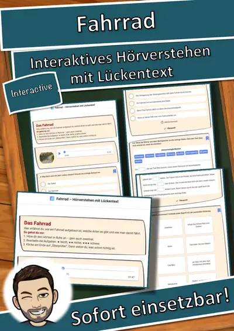
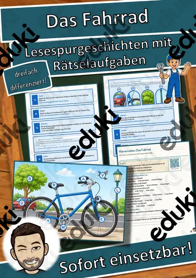

Lesespur: Das Gericht – Lesespurgeschichte mit Rätseln (Klasse 9)
Mit dieser differenzierten Lesespurgeschichte erarbeiten die Lernenden selbstständig und motivierend, wie ein Gericht im Rechtsstaat arbeitet und welche Rechte ein Angeklagter hat. Richterin Frau Waage führt Mia und Tom Schritt für Schritt durch ein Amtsgericht – vom Eingang über Geschäftsstelle, Richterzimmer, Staatsanwaltschaft, Verteidigerbüro und Zeugenzimmer bis in den Gerichtssaal und zur Jugendgerichtshilfe. Roter Faden ist ein erfundener Fall: ein gestohlenes Fahrrad.
So funktioniert die Lesespur: Die Lernenden lesen einen Abschnitt, entnehmen dem Hinweis einen Raum im Gericht, suchen ihn auf dem farbigen Gerichts-Plan (einem Querschnitt des Gebäudes) und lesen dort weiter. An jeder richtigen Station sammeln sie einen Buchstaben. Vier Sackgassen (Aktenwagen, Getränkeautomat, Pflanze, Bank) dienen der Selbstkontrolle. Am Ende ergeben die gesammelten Buchstaben – nach dem Umstellen – ein geheimes Lösungswort rund um das Thema.
Inhaltlich vermittelt das Material sachlich und ohne reale Personen die Öffentlichkeit der Verhandlung, Anklage und Akte, die Unabhängigkeit der Richter, die Aufgaben der Staatsanwaltschaft, das Recht auf Verteidigung, die Wahrheitspflicht der Zeugen, den Ablauf einer Verhandlung mit Beweisaufnahme, Plädoyers und Urteil, den Grundsatz „im Zweifel für den Angeklagten" sowie die Besonderheiten des Jugendstrafrechts. Ein lehrplanrelevantes und prüfungsvorbereitendes Thema für die Sekundarstufe I aller Schularten (Mittel-, Haupt-, Real-, Ober-, Gesamt- und Gemeinschaftsschule, Gymnasium) – passend zu Rechtsstaat, Gewaltenteilung und Jugend und Recht.
Das ist enthalten:
- Lesespurgeschichte in drei Niveaus (leicht, mittel, schwer) – ideal zur Differenzierung
- farbiger Gerichts-Plan mit allen Stationen
- vier eingebettete Aufträge: Begriffe verbinden, Quiz, Rechenaufgabe, Steckbrief
- Hörverstehen mit QR-Code zum Hörtext (Teil A Ankreuzen, Teil B frei schreiben)
- Rätselseite (Wörter-Suchsel und Wissensquiz)
- Ausmalbild
- ausführliches Lösungsblatt mit Fundorten
- das komplette Material zusätzlich als drucksparende Schwarz-Weiß-Vorlage
Geförderte Kompetenzen: sinnentnehmendes und selektives Lesen, Anwenden von Lesestrategien, konzentriertes Zuhören sowie das Verständnis rechtsstaatlicher Verfahren.
Einsatz: Übungsphasen, Wochenplan, Stationenlernen, Vertretungsstunden, Freiarbeit, Projekttage zu Recht und Demokratie sowie Nachhilfe. Umfang: ca. 24 Seiten.
Ähnliche Materialien

Gericht Lückentext mit Wortspeicher Hörverstehen und Suchsel

Streit vor Gericht oder davor – Arbeitsheft mit Lösungen (WR 8, Realschule Bayern)

Rechtsstaat Lückentext mit Wortspeicher Hörverstehen und Suchsel

Fahrrad – Hörverstehen mit Lückentext (interaktiv)

Fahrrad Lückentext mit Wortspeicher Hörverstehen und Suchsel

Lesespur: Das Fahrrad – Lesespurgeschichte mit Rätseln (Klasse 4)

Waage – Hörverstehen mit Lückentext (interaktiv)